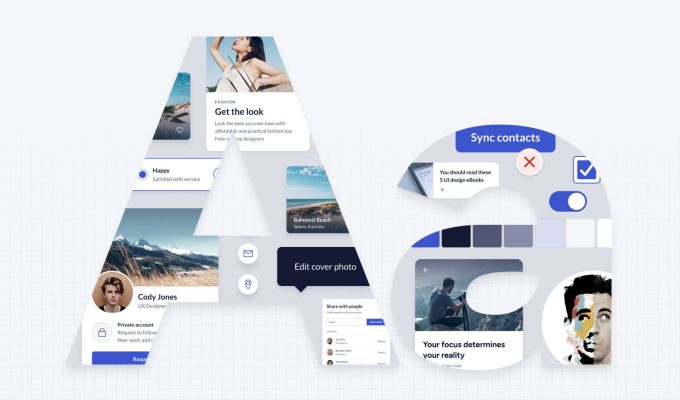

The Art of Debugging: Turning Frustration into Fascination
Debugging: Because staring at your screen in frustration is a perfectly valid debugging technique.
Debugging. The word itself can send shivers down the spine of any developer. It’s the phase in programming where your patience, perseverance, and problem-solving skills are put to the ultimate test. But what if I told you that debugging could actually be fascinating? Yes, you heard that right. In this blog, we’ll explore how you can turn the frustrating process of debugging into a captivating and rewarding experience.
The Initial Frustration: Welcome to the Bug Zone
Let’s face it, encountering bugs is inevitable. The initial reaction is often one of frustration, followed by a series of exasperated sighs and the occasional (or frequent) muttered curse. But remember, this frustration is just the beginning of a journey that can lead to deeper understanding and improved coding skills.
Step 1: Embrace the Challenge
Think of debugging as a detective game. Your code is a complex mystery, and the bug is a sneaky villain hiding in the shadows. Your job? To unmask this culprit using nothing but logic, intuition, and a lot of trial and error. Embracing this mindset transforms debugging from a tedious chore into an engaging puzzle.
Step 2: Break It Down
When faced with a bug, the first step is to break down the problem. Isolate the issue by narrowing down the section of code that’s causing the problem. This might involve commenting out parts of your code or using print statements to track the flow of execution. Remember, the smaller the search area, the easier it is to find the bug.
Step 3: Use the Right Tools
Debugging tools are your best friends in this journey. Integrated Development Environments (IDEs) like PyCharm, Visual Studio Code, and IntelliJ IDEA come equipped with powerful debugging features. Learn to use breakpoints, step execution, and variable watches effectively. These tools provide insights into the state of your program, helping you pinpoint the exact moment things go awry.
Step 4: Rubber Duck Debugging
Ever heard of rubber duck debugging? The concept is simple yet surprisingly effective. Explain your code, line by line, to an inanimate object like a rubber duck. This practice forces you to articulate your thought process, often revealing hidden mistakes or logical errors. Plus, your rubber duck is guaranteed to be a patient listener.
Step 5: Take Breaks
When frustration reaches its peak, sometimes the best thing you can do is step away. Take a break, go for a walk, or grab a coffee. This break allows your brain to reset, and you might just find that the solution pops into your head when you least expect it.
Step 6: Learn from the Experience
Every bug is a learning opportunity. Once you’ve successfully squashed a bug, take a moment to reflect on what caused it and how you solved it. Document this process if necessary. Over time, you’ll build a mental repository of common issues and their solutions, making you a more efficient and knowledgeable developer.
Real-Life Debugging Adventures
To illustrate the art of debugging, let me share a few real-life adventures from my own coding journey:
The Case of the Phantom Variable:
Once, I spent hours chasing a bug only to realize I had misspelled a variable name. It was a classic case of "can't see the forest for the trees." Lesson learned: Pay attention to detail.The Infinite Loop Loop:
In another instance, my code was stuck in an infinite loop. After much hair-pulling, I discovered I had forgotten to update the loop variable. Lesson learned: Always check your loop conditions.The Mystery of the Missing Semicolon:
A missing semicolon in my JavaScript code led to a cascade of errors. It was a humbling reminder of the importance of syntax. Lesson learned: Semicolons matter.
Conclusion
Debugging is an art form, one that transforms frustration into fascination. By embracing the challenge, breaking down the problem, using the right tools, and learning from each experience, you can turn debugging into a rewarding and enlightening process. So, the next time you find yourself staring at your screen in exasperation, remember: you’re not just fixing bugs; you’re honing your skills and becoming a better developer.
Happy debugging!
Bonus Tip: Debugging with Humor
When all else fails, remember to keep your sense of humor. Debugging can be frustrating, but a good laugh can make even the toughest bug feel a little less daunting. After all, as the saying goes, "To err is human; to debug, divine."